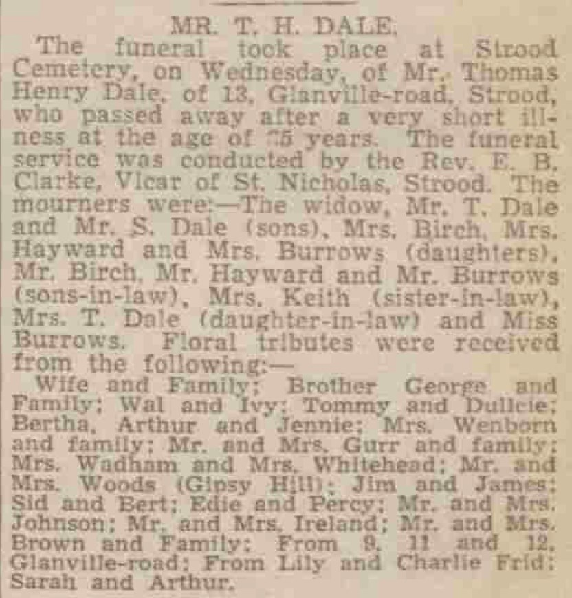

Thomas Henry Dale 1854 - c1939
[ Home ] | [ Calendar ] | [ Surnames Index ] | [ Errors ] | [ Family History ]A dock yard labourer and the child of William Dale (an agricultural labourer) and Charlotte Bolding, Thomas Dale, the first cousin four-times-removed on the father's side of Nigel Horne, was born in Chartham, Kent, England on 17 Apr 18541,2,3,4, was baptised there at St Mary on 6 May 1854 and married Jane Laws (with whom he had 5 children: Thomas Henry, Bertha Elizabeth, Lily, Hilda May and Sidney Robert, along with 2 surviving children) at All Saints, Frindsbury, Kent, England on 15 Jan 18818.
During his life, he was living at Heath Farm Cottages, Canterbury, Kent on 7 Apr 18611; at Burnt House Farm in Chartham on 2 Apr 187113; at Prentice Street, Strood, Kent on 3 Apr 188112; at Montford Road, Strood, Kent on 5 Apr 18912; on Brompton Lane, Strood, Kent on 31 Mar 190110 and on 2 Apr 191111; and at 13 Glanville Road, Rochester, Kent on 29 Sept 19393 which is where he died c. Oct 19395,6,7. He was buried at Old & Cuxton Road Cemeteries, Strood, Kent in Oct 19399.
Parents
- William was born c. 1825
- Charlotte was born c. 1822
Children
- Thomas Henry was born on 12 Jan 1882
- Lily was born in 1887
- Sidney Robert was born in 1891
Citations
- 1861 England, Wales & Scotland Census - Findmypast (was age 7 and the son of the head of the household)
- 1891 England, Wales & Scotland Census - Findmypast (was age 36 and the head of the household)
- 1939 Register - Findmypast (was the head of the household)
- England & Wales births 1837-2006 - Findmypast
- England & Wales Government Probate Death Index 1858-2019 - Findmypast
- England & Wales deaths 1837-2007 - Findmypast
- England & Wales deaths 1837-2007 - Findmypast
- England Marriages 1538-1973 - Findmypast
- Kent Burials - Findmypast
- 1901 England, Wales & Scotland Census - Findmypast (was age 46 and the head of the household)
- 1911 Census for England & Wales - Findmypast (was age 56 and the head of the household)
- 1881 England, Wales & Scotland Census - Findmypast (was age 26 and a lodger head in the household)
- 1871 England, Wales & Scotland Census - Findmypast (was age 16 and a servant in the household)
Media
Chatham News - 13 October 1939

1901 England, Wales & Scotland Census - GBC/1901/0005405506
1911 Census for England & Wales - GBC/1911/RG14/03869/0947/1
England & Wales deaths 1837-2007 - BMD/D/1939/4/AZ/000218/054
England & Wales deaths 1837-2007 - BMD/D/1933/1/AZ/000289/030
England & Wales marriages 1837-2005 - BMD/M/1881/1/AZ/000052/123
Kent marriages and banns - PRS/MEDWAY/MAR/0061233/1
1881 England, Wales & Scotland Census - GBC/1881/0004417186
England Births & Baptisms 1538-1975 - R_885422920
Kent Baptisms - GBPRS/CANT/B/96193124
England & Wales Government Probate Death Index 1858-2019 - GBOR/GOVPROBATE/C/1933-1933/00026649
Kent Burials - KENT/FHS/BUR/CIVIL/145851
1939 Register - TNA/R39/1771/1771B/013/35
1871 England, Wales & Scotland Census - GBC-1871-0014163415
Family Tree

Map
Generated by ged2site. Last updated on Jul 3, 2024
Known Issues
Listed in the residence for 29 Sep 1939, but spouse Jane Laws is not